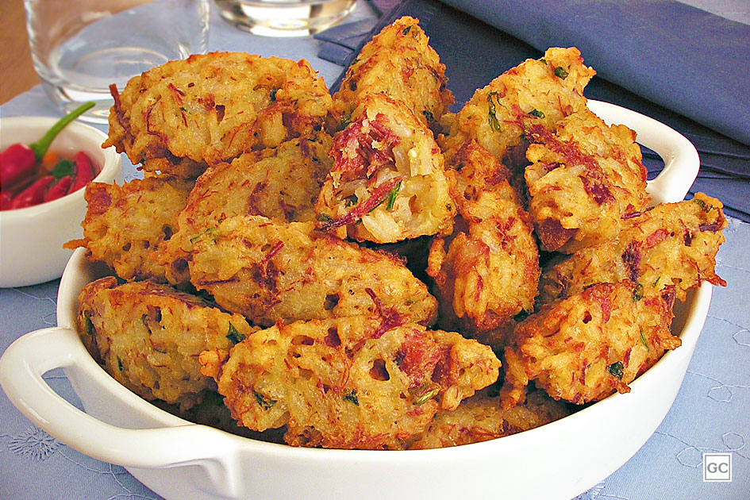
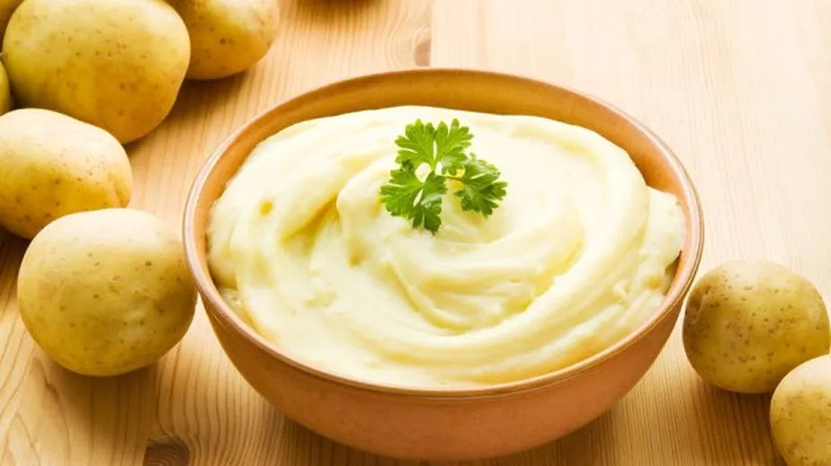

Ingredientes
- 2 xícaras de arroz cozido
- 1/2 xícara de queijo parmesão ralado
- 1/2 xícara de farinha de trigo
- 2 ovos
- 1/4 xícara de leite
- 1/4 xícara de cebola finamente picada
- 2 dentes de alho picados
- 2 colheres de sopa de salsinha ou cebolinha picada
- 1/2 colher de chá de fermento em pó
- Sal e pimenta a gosto
- Óleo para fritar
Modo de preparo
- Misture arroz cozido, queijo parmesão, farinha de trigo, ovos, leite, cebola, alho e salsinha em uma tigela. Adicione fermento em pó, sal e pimenta a gosto.
- Modele a mistura em pequenas bolinhas com duas colheres ou com as mãos.
- Aqueça óleo em uma frigideira. Frite os bolinhos até que estejam dourados e crocantes, cerca de 3-4 minutos de cada lado.
- Coloque os bolinhos sobre papel toalha para escorrer o excesso de óleo e sirva quente.

Ingredientes
- 1 bolo assado (sabor de sua escolha)
- 1 xícara de cobertura (leite condesado, ganache, doce de leite)
- Chocolate derretido
- Palitos para cake pops
- Confeitos para decorar (opcional)
Modo de preparo
- Depois de assar e esfriar o bolo, esmigalhe-o até obter migalhas pequenas em uma tigela grande.
- Adicione cerca de 1 xícara de cobertura (leite condensado, ganache ou doce de leite) às migalhas de bolo. Misture até que a massa fique úmida e moldável.
- Modele a mistura em bolinhas do tamanho de uma colher de chá e coloque-as em uma assadeira forrada com papel manteiga.
- Mergulhe a ponta de cada palito no chocolate derretido e insira na bolinha de bolo. Isso ajuda o palito a ficar fixo.
- Coloque as bolinhas no congelador por 15-20 minutos para firmar.
- Mergulhe as bolinhas no chocolate derretido, deixe o excesso escorrer e decore com confeitos antes que o chocolate seque.
- Coloque os cake pops de cabeça para cima em um suporte ou placa de isopor, deixe secar completamente e sirva.

Ingredientes
- 1 kg de batatas
- 1/2 xícara de leite (ou mais, conforme necessário)
- 1/4 xícara de manteiga
- 2 ovos
- Sal, pimenta e temperos a gosto
Modo de preparo
- Descasque e corte as batatas em pedaços. Cozinhe em água salgada até ficarem macias (15-20 minutos).
- Escorra as batatas e retorne-as para a panela para evaporar a umidade.
- Amasse as batatas até obter uma textura lisa.
- Adicione manteiga e leite aos poucos, mexendo até ficar cremoso.
- Tempere com sal, pimenta e outros temperos a gosto e sirva quente.